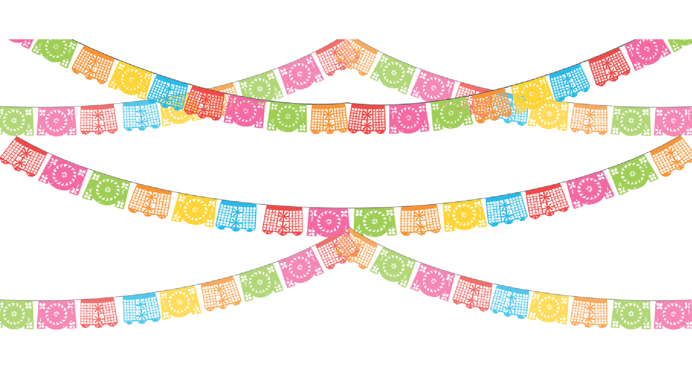
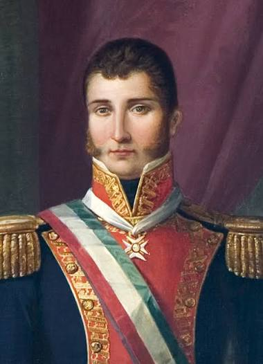

Madrugada del 16 de septiembre. Miguel Hidalgo convoca al pueblo a levantarse en armas contra el dominio español.
Firma del Plan de Iguala y los Tratados de Córdoba para pactar la independencia de México.
Periodo de consolidación del Estado Mexicano y conflictos políticos tras la independencia.
Época previa a la Guerra de Reforma y desarrollo de las leyes liberales en México.
Inicio de la Revolución Mexicana convocada por Francisco I Madero el 20 de noviembre
Fin de la fase armada de la Revolución Mexicana e inicio de la reconstrucción nacional.

"Padre de la Patria". Inició la Independencia de México el 16 de septiembre de 1810 convocando al pueblo en Dolores.

"Siervo de la Nación". Lideró el movimiento insurgente y redactó el documento Sentimientos de la Nación.

Comandante del Ejército Trigarante que consumó la independencia de México mediante el Plan de Iguala en 1821.

Insurgente que mantuvo viva la lucha en el sur y pactó el famoso "Abrazo de Acatempan" con Iturbide.

La "Corregidora". Pieza clave de la Conspiración de Querétaro al avisar que el movimiento insurgente había sido descubierto.
(Dato Curioso – El Grito del 15): Aunque el Grito de Independencia ocurrió en la madrugada del 16 de septiembre de 1810, la tradición de celebrarlo la noche del 15 de septiembre a las 11:00 PM se popularizó durante el gobierno de Porfirio Díaz para hacer coincidir el festejo nacional con la fecha de su cumpleaños.
(Mito – La Campana de Dolores): Existe el mito de que Miguel Hidalgo tocó personalmente la campana para llamar al pueblo a las armas. Sin embargo, los registros históricos indican que fue el campanero de la parroquia, José José Galván, quien hizo sonar la campana mientras Hidalgo convocaba a la multitud.